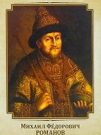

Владимир Святославич

Михаи́л Фёдорович (12 июля 1596, Москва — 13 июля 1645, Москва) — первый русский царь из династии Романовых. Правил с 27 марта (6 апреля) 1613 года, был избран на царствование Земским собором 21 февраля (3 марта) 1613 года. Михаил Фёдорович был сыном боярина Фёдора Никитича Романова, позже ставшего православным патриархом Филаретом.